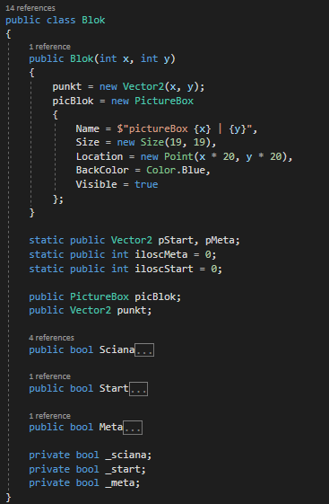
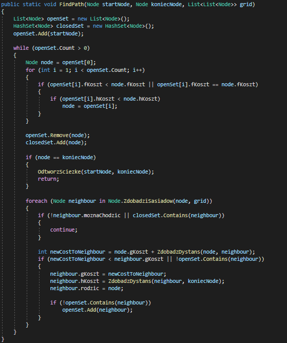
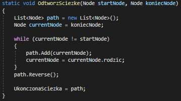
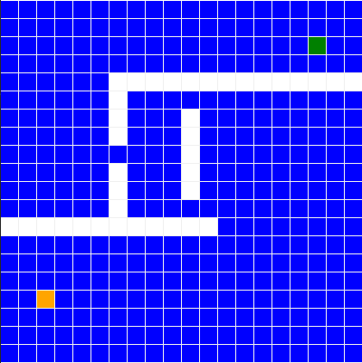
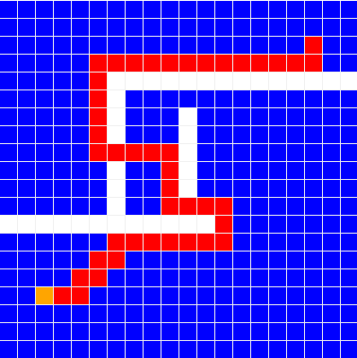

Algorytm AStar
AStar w Windows Forms - GithubAStar w konsoli - Github
Algorytm A* – algorytm heurystyczny znajdowania najkrótszej ścieżki w grafie ważonym z dowolnego wierzchołka do wierzchołka spełniającego określony warunek zwany testem celu. Algorytm jest zupełny i optymalny, w tym sensie, że znajduje ścieżkę, jeśli tylko taka istnieje, i przy tym jest to ścieżka najkrótsza. Stosowany głównie w dziedzinie sztucznej inteligencji do rozwiązywania problemów i w grach komputerowych do imitowania inteligentnego zachowania.
Grafiką i sam algorytm wykonany został odzielnie klasą dla samej grafiki była klasa: Blok w której znajdowały się rzeczy graficzne czyli np. PictureBox który jest używany przez WinForms do pokazyanie obrazka który był kolorowany na odpowiedni kolor.
Do samego algorytmu była potrzebna klasa o przyjętej nazwie przez wielu klasa: Node która miała atrybuty miejsca czyli np. odległosci jak i połozenia miała też w sobie funkcji oblicznia (znajodowania) swoich sasiadów co ułatwia używanie ssamego algorytmu.

Algorytm sam w sobie jest banalny polega na ciągłym sprawdzania kosztów (odległosci od mety i startu) bloków (nodów) które pózniej są dodawane na liste i po sprawdzeniu wszstkich bloków które doprowadziły do mety lista ta jest sprawdzana i funkcjia przekazuje wszystkie bloki którymi trzeba iść.
Funkcja sprawdzająca bloki w liście końcowej i ustawia je w zmiennej o ukończonej ścieżce.
Mapa przed znalezieniem scieżki:
Mapa po znalezieniu scieżki:
